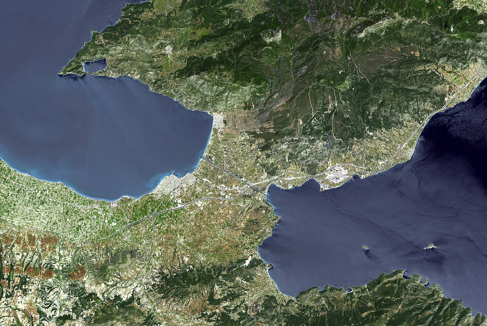
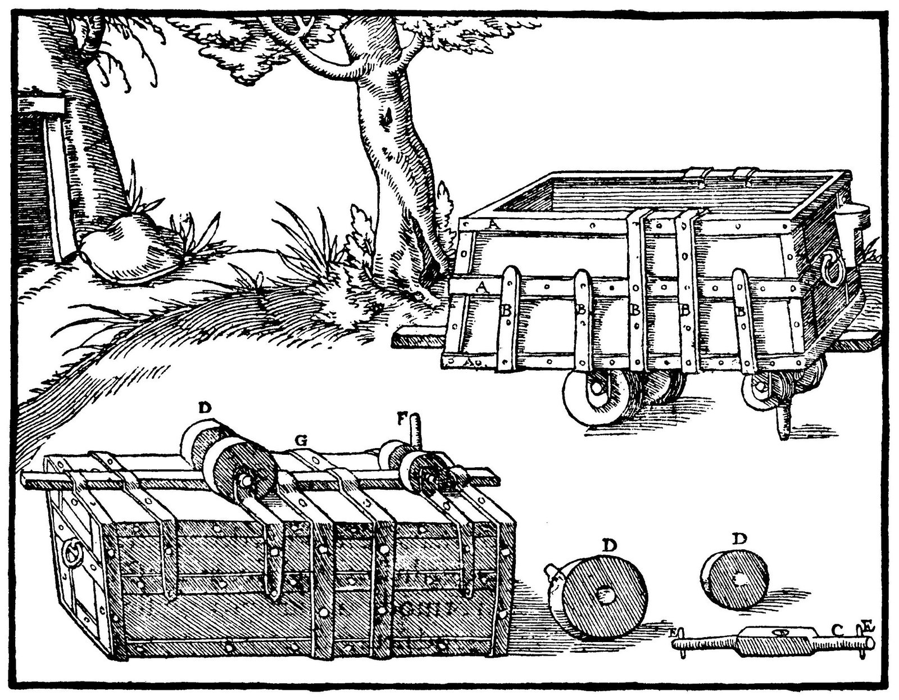
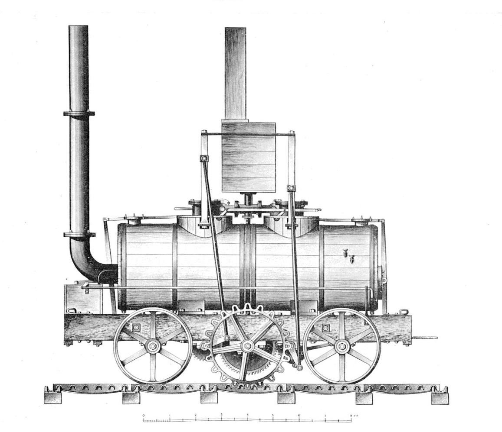

[문명의 궤도, 철도①] 고린토의 석제궤도에서 증기기관차까지
기원전 600년 무렵 코린토스 지협 디올코스, 배와 짐을 뭍으로 끈 돌길
1530년 무렵 독일 광산 훈트 수레에서 1803년 영국 서리 철도까지
1804년 페니다렌에서 1829년 레인힐까지, 궤도에 올라탄 증기기관차
AI경제저널=김갑봉 기자 | 기원전 428년 여름, 그리스 코린토스(고린토) 지협. 스파르타가 먼저 도착해 지협에 배를 끄는 장치를 만들기 시작했다. 코린토스 쪽 바다의 배를 아테네 쪽 바다로 옮기려는 채비였다. 고대 역사가 투키디데스가 『펠로폰네소스 전쟁사』 3권에 남긴 장면이다.
배가 뭍을 건너던 그 길을 그리스 지리학자 스트라본은 『지리지』 8권에서 디올코스(Diolkos)라 적었다. 「배를 뭍으로 끌어 넘기는 곳」이라는 설명도 붙였다. 바퀴를 길에 맞춰 끄는 기술은 그 뒤 중부 유럽 광산에서 다시 기록에 나타난다.
기원전 600년 무렵 디올코스, 바퀴 홈을 판 돌길
디올코스가 놓인 때는 기원전 7세기 말에서 6세기 초 사이로 본다. 코린토스를 다스린 페리안드로스 시대(기원전 625~585년)로 보는 견해가 많다. 포장석에 새긴 그리스 글자 꼴이 근거다. 베르너(W. Werner)는 전체 길이를 8㎞쯤으로 봤다.
포장한 길 폭은 3.6~4.2m다. 양옆에는 폭 5m가 넘는 다진 흙길이 붙어 있었다. 해발 79m 고개를 넘으면서 굽은 길을 골라 기울기를 1/70 안팎으로 낮췄다. 곧게 냈다면 1/37이 됐을 비탈이다.

운하 서쪽 어귀 군부대 구역의 홈은 사람이 일부러 팠다. 다른 구간은 홈이 없거나 얕다. 두 바퀴 홈 사이는 1.5m 안팎이다. 베르너는 구간에 따라 1.5m와 1.52m로 적었다.
유적은 1956년 군사 훈련 중 불도저가 포장석을 들추면서 다시 드러났다. 그리스 고고학자 니콜라오스 베르델리스가 1950년대 후반 발굴을 이끌었다. 베르너는 1997년 논문에 확인된 구간을 1100m로 적었다.
유적은 1893년 뚫린 코린토스 운하와 맞닿아 있다. 운하를 지나는 배가 일으킨 물결에 돌길 서쪽 끝이 깎여 나갔다. 그리스 중앙고고학위원회는 2022년 복원 연구를 승인했다.
1979년 쿡에서 2011년 페테그루까지, 장삿길인가 전략로인가
무엇을 어떻게 옮겼는지는 학자마다 해석이 갈린다. 베르너는 1997년 『국제해양고고학저널』 논문에서 배를 바퀴 달린 대차에 얹었다고 봤다. 사람과 가축이 밧줄로 끌었다는 해석이다.
베르너는 삼단노선 한 척을 옮기려면 21톤쯤을 끌어야 한다고 봤다. 노잡이 170명이 함께 끌면 한 사람 몫이 125㎏쯤이라는 계산도 붙였다. 쿡은 1979년 『그리스학저널』 논문에서 디올코스가 처음부터 장삿길이었다고 봤다. 맥도널드는 1986년 같은 학술지에서 이 견해를 짚었다.
벨기에 학자 라에프세(G. Raepsaet)는 1993년 논문에서 짐에 눈을 돌렸다. 통돌 기둥과 통나무처럼 나눌 수 없는 무거운 짐을 나르는 데 디올코스가 쓸모 있었다고 봤다.
미국 고고학자 데이비드 페테그루(D. K. Pettegrew)는 2011년 『미국고고학저널』 논문에서 다른 결론을 냈다. 디올코스는 주로 장삿길이 아니었다. 코린토스와 동맹국의 연락과 수송, 왕래와 전략에 쓰인 길이었다.
고대 기록에 남은 사례는 대부분 전쟁 때다. 기원전 412년 무렵 스파르타 동맹군이 배 39척 가운데 21척을 먼저 넘겼다. 기원전 220년에는 파로스의 데메트리오스가 50척을 넘겼다. 기원전 217년 마케도니아 왕 필리포스 5세는 갑판 없는 배 8척과 빠른 배 30척을 넘겼다.
언제까지 쓰였는지도 견해가 갈린다. 쿡은 로마 제정 초까지 쓰였다고 봤다. 베르너는 12세기 기록을 마지막으로 꼽았다.
9세기 후반 비잔틴 제독 니케타스 오리파스가 함선 100척을 끌어 넘겼다는 기록도 있다. 베르너는 868년, 페테그루는 872년 무렵으로 적었다. 페테그루는 이 일이 실제로 있었는지 의심한다.
지협을 가로지를 까닭은 바다에 있었다. 펠로폰네소스 반도 남쪽 말레아 곶은 거친 바다로 이름났다. 스트라본은 『지리지』 8권에 뱃사람들 속담을 옮겼다. "말레아를 돌 때는 고향을 잊어라."
디올코스는 아테네 희극에도 나온다. 아리스토파네스는 『테스모포리아주사이』 647~648행에서 지협을 빗대 짓궂은 농담을 했다. 10세기 비잔틴 사전 『수다』가 이 대목을 풀었다. 배를 지협 너머로 끌던 코린토스 사람들 관행에 기댄 농담이라는 풀이다.
1530년 무렵 독일 광산 훈트, 쇠못이 이끈 수레
독일 프라이부르크 대성당에는 14세기 광산 수레를 그린 유리창이 있다. 영국 스티븐슨기관차학회 연표가 꼽은 사례다. 1427년 문서에는 수레를 미는 일꾼 「훈트슈퇴서」가 나온다. D. 조이는 1969년 글에서 1530년 무렵 독일 광업 책에 실린 궤도 수레 삽화를 철길의 첫 문헌 증거로 꼽았다.
1550년 제바스티안 뮌스터의 『코스모그라피아』에도 비슷한 수레 그림이 나온다. 1556년 게오르기우스 아그리콜라(Georgius Agricola, 1494~1555)의 『데 레 메탈리카(De re metallica)』가 나왔다.
책에 실린 광산 수레 바퀴는 나무 굴림대다. 수레 밑에는 끝이 뭉툭한 큰 쇠못을 달았다. 쇠못이 바닥에 깐 판자의 홈을 따라 달리니 수레가 길을 벗어나지 않았다.

이 수레를 훈트(Hund), 우리말로 개라고 부르는 이들이 있었다. 아그리콜라는 굴러갈 때 나는 소리가 개 짖는 소리 같아서라고 적었다. 어원 풀이는 아그리콜라 뒤로 460년 넘게 엇갈려 왔다.
독일 광부가 이 기술을 영국에 들여왔다는 설이 있다. 1568년 이후 잉글랜드 북서부 컴브리아 케직(Keswick) 일대 왕립광산회사 광산에서 독일 광부들이 일했다. 이웃 콜드벡(Caldbeck) 유적에서 훈트 궤도 조각이 나왔다. 조이는 독일에서 건너왔다는 증거는 없다고 봤다.
1604년 울러턴에서 1803년 서리 철도까지
1603년 10월에서 1604년 9월 사이 헌팅던 보먼트가 노팅엄 근처 울러턴(Wollaton)에 나무 궤도를 깔았다. 탄광 석탄을 실어 내는 길이었다. 땅 주인 퍼시벌 윌러비 경이 내준 통행 임대 문서가 노팅엄대학교에 남아 있다.
슈롭셔 브로즐리에서도 1605년 무렵 궤도를 깔기 시작했다. 말이 화차를 끄는 이런 나무 궤도를 웨건웨이(wagonway)라 불렀다. 17세기 들어 웨건웨이는 잉글랜드 북동부 타인강 일대 탄광으로 퍼졌다.
로저 노스는 형 프랜시스 노스의 전기에 1676년 뉴캐슬 웨건웨이를 적었다. "말 한 마리가 석탄 4~5칼드런을 끌어 내린다." 1911년판 브리태니커는 이를 10.6~13.2톤으로 셈했다.
18세기 초 나무 궤도는 탠필드(Tanfield) 탄광까지 뻗었다. 그 길에 놓인 돌다리 코지 아치(Causey Arch)에는 1727년을 새긴 돌이 남아 있다. 다리 길이는 105피트(32m)다.
나무 레일은 쉽게 닳았다. 1767년 슈롭셔 콜브룩데일 제철회사가 주철 레일을 처음 부어 냈다. 1776년 셰필드의 존 커는 턱을 세운 L자 주철판 레일인 플레이트웨이(plateway)를 깔았다.
1801년 영국 의회가 서리 철도(Surrey Iron Railway) 법을 통과시켰다. 이 철도는 1803년 7월 문을 열었다. 의회법으로 세운 첫 공공철도로 꼽힌다. 통행료만 내면 누구나 화차를 끌고 지날 수 있었다.
말이 화차를 끌었다. 한 마리가 3~4량을 끌었고 궤간은 4피트 2인치(1270㎜)였다. 서리 철도는 1846년 문을 닫았다. 1807년 3월에는 웨일스 스완지의 오이스터마우스 철도가 처음으로 돈을 받고 승객을 태웠다.
1804년 페니다렌, 쇠 10톤과 70명을 끈 기관차
1804년 2월 21일 웨일스 머서티드빌 페니다렌(Penydarren) 제철소. 리처드 트레비식(Richard Trevithick, 1771~1833)이 만든 증기기관차가 9마일(약 14.5㎞)을 달렸다. 화차 5량에 쇠 10톤을 싣고 70명을 태웠다.
트레비식은 편지에 "달리는 동안 시속 5마일에 가까웠다"고 적었다. 기관차는 레일에 너무 무거웠다. 돌아오는 길에는 볼트가 부러져 보일러 물이 샜다.
톱니로 레일을 물고 달리는 방식이 그다음에 나왔다. 1812년 잉글랜드 리즈 미들턴 철도(Middleton Railway)에서 톱니 레일 기관차가 달리기 시작했다. 미들턴 철도는 1758년 의회법으로 승인받은 첫 철도다.
매슈 머리가 존 블렌킨솝의 톱니 레일 방식으로 기관차를 만들었다. 블렌킨솝은 편지에 기관차 무게가 5톤이라고 적었다. 평지에서 화차 27량, 94톤을 시속 3.5마일로 끌었다고 했다. 그해 8월 개통식에는 살라망카(Salamanca)가 나섰다.

톱니 없이 바퀴와 레일 사이 마찰로 달리는 기관차도 나왔다. 1813~1814년 와일럼 탄광의 퍼핑 빌리(Puffing Billy)가 그중 하나다. 무게는 8톤쯤이고 1862년까지 일했다. 지금 남아 있는 가장 오래된 증기기관차로 런던 과학박물관에 있다.
1814년 조지 스티븐슨(George Stephenson, 1781~1848)은 킬링워스 탄광에서 블뤼허(Blücher)를 만들었다. 석탄 화차 8량, 30톤을 시속 4마일로 끌었다. 1825년 문을 연 스톡턴·달링턴 철도는 증기기관차와 말, 밧줄 경사로를 함께 썼다.
1829년 레인힐, 로버트 스티븐슨의 로켓
1829년 10월 6일 리버풀 동쪽 레인힐(Rainhill). 리버풀·맨체스터 철도회사가 쓸 기관차를 고르는 시험이 열렸다. 기관차는 제 무게 세 배를 끌고 1.75마일 구간을 열 번 오가야 했다. 연료와 물을 채운 뒤 다시 열 번, 모두 70마일(약 113㎞)이었다.
평균 시속 10마일 이상이어야 했다. 회사가 처음 낸 공고는 무게 6톤 기관차에 20톤을 끌라고 했다. 공고문 끝줄은 레일 폭을 못 박았다. "레일 안쪽 간격은 4피트 8인치 반이다."
로켓(Rocket)은 조지 스티븐슨의 아들 로버트 스티븐슨(Robert Stephenson, 1803~1859)이 설계했다. 무게는 4톤 5헌드레드웨이트, 약 4.3톤이었다. 쓰고 난 증기를 굴뚝으로 뿜어 불길을 키우는 송풍관을 달았다.
로켓은 13톤을 끌고 평균 시속 12마일(약 19㎞)로 달렸다. 짐을 떼고 홀로 달릴 때는 시속 30마일(약 48㎞)을 넘겼다. 속도 기록은 자료마다 조금씩 갈린다. 시험에 나선 기관차 가운데 로켓만 끝까지 달렸다.
과학박물관은 로켓이 "앞날의 본을 세웠다"고 소개한다. 같은 설명에는 로켓이 18개월 안에 크게 고쳐 지어졌고 10년 안에 쓰이지 않게 됐다는 대목도 있다.
1830년 가을 나온 플래닛형이 이 철도의 표준 기관차가 됐다. 로켓은 1862년 특허청박물관에 기증됐다. 2026년 10월 현재 요크 국립철도박물관 그레이트홀에 있다.
1846년 궤간규제법, 4피트 8인치 반
궤간은 처음에 철도마다 달랐다. 영국은 1846년 궤간규제법으로 새 여객철도의 궤간을 묶었다. 그레이트브리튼은 4피트 8인치 반(1435㎜)이었다. 아일랜드는 5피트 3인치(1600㎜)로 정했다.
한국 철도도 같은 폭을 쓴다. 국토교통부 「철도의 건설기준에 관한 규정」 제5조는 궤간 표준치수를 1435㎜로 정했다. 레인힐 공고문이 적은 4피트 8인치 반이 오늘 한국 철도의 궤간이다.
배를 끌던 코린토스 돌길의 홈 간격은 1.5m 안팎이다. 오늘 궤간 1435㎜와 65~85㎜ 차이다. 디올코스와 레인힐 공고 사이는 2400여년이다.
참고문헌
- Werner, W.(1997), "The largest ship trackway in ancient times: the Diolkos of the Isthmus of Corinth, Greece, and early attempts to build a canal", 『International Journal of Nautical Archaeology』 26(2), 98~119쪽. https://ancientportsantiques.com/wp-content/uploads/Documents/PLACES/GreecePeloponnesus/Diolkos-Werner1997.pdf
- Pettegrew, D. K.(2011), "The Diolkos of Corinth", 『American Journal of Archaeology』 115(4), 549~574쪽. https://ajaonline.org/article/1023/
- Raepsaet, G.(1993), "Le diolkos de l'Isthme à Corinthe: son tracé, son fonctionnement", 『Bulletin de Correspondance Hellénique』 117(1), 233~261쪽. https://www.persee.fr/doc/bch_0007-4217_1993_num_117_1_1679
- Cook, R. M.(1979), "Archaic Greek trade: three conjectures", 『Journal of Hellenic Studies』 99, 152~155쪽. https://cambridge.org/core/journals/journal-of-hellenic-studies/article/abs/archaic-greek-trade-three-conjectures/81E5D0ED611387816DB41F274726D496
- MacDonald, B. R.(1986), "The Diolkos", 『Journal of Hellenic Studies』 106, 191~195쪽. https://www.cambridge.org/core/journals/journal-of-hellenic-studies/article/diolkos/5E4D71B1D657DC54DEE007C5EB73528B
- Joy, D.(1969), "Mine Railways: an Introduction to their History and Development in the North of England", 『Northern Cavern & Mine Research Society Memoirs』, 77~84쪽. https://www.nmrs.org.uk/assets/pdf/M69/M69-77-84-railways.pdf
- Agricola, G.(1556), 『De re metallica』, Hoover, H. C. & Hoover, L. H. 영역(1912). https://www.gutenberg.org/ebooks/38015.html.images
- Thucydides, 『History of the Peloponnesian War』 3.15, C. F. Smith 영역. https://cts.perseids.org/read/greekLit/tlg0003/tlg001/1st1K-eng1/3.15.1-3.15.2
- Strabo, 『Geography』 8.2.1·8.6.20, H. L. Jones 영역(Loeb, 1924), Perseus Digital Library. https://www.perseus.tufts.edu/hopper/text?doc=Perseus:text:1999.01.0198:book=8:chapter=2:section=1
- 국토교통부, 「철도의 건설기준에 관한 규정」(국토교통부고시 제2025-244호, 2025년 5월 16일 시행) 제5조(궤간), 국가법령정보센터. https://www.law.go.kr/행정규칙/철도의건설기준에관한규정
- 「An Act for regulating the Gauge of Railways」(1846, 9 & 10 Vict. c.57), Irish Statute Book. https://www.irishstatutebook.ie/eli/1846/act/57/enacted/en/print.html
- Science Museum Group, "Rocket locomotive"(소장번호 1862-5). https://collection.sciencemuseumgroup.org.uk/objects/co26704/rocket-locomotive
- Science Museum Group, "Puffing Billy locomotive"(소장번호 1862-2). https://collection.sciencemuseumgroup.org.uk/objects/co26701
- Science Museum Group, "Surrey Iron Railway". https://collection.sciencemuseumgroup.org.uk/people/cp27713
- Amgueddfa Cymru – Museum Wales, "Richard Trevithick's steam locomotive". https://museum.wales/blog/1012/Richard-Trevithickrsquos-steam-locomotive/
- MyLearning(Leeds Museums & Galleries), "The rack and pinion railway – John Blenkinsop". https://www.mylearning.org/stories/originating-in-leeds/the-rack-and-pinion-railway---john-blenkinsop
- Historic England, "Causey Arch", 등록번호 1240816. https://historicengland.org.uk/listing/the-list/list-entry/1240816
- 리버풀·맨체스터 철도회사 레인힐 시험 공고(1829년 4월) 전문, Peel Web. https://historyhome.co.uk/peel/railways/rainhill.htm
- Stephenson Locomotive Society, "Early railways time line". https://stephensonloco.org.uk/Archived%20pages/early_railways_files/time_line.htm
- "Trial of steam carriages", 『The Spectator』, 1829년 10월 17일. https://archive.spectator.co.uk/article/17th-october-1829/6/trial-el-steam-carriagesthe-liverpool-papers-conti
[사진 출처]
- [사진1] NASA/GSFC/METI/ERSDAC/JAROS, U.S./Japan ASTER Science Team, 「Corinth, Greece (NASA).jpg」, 2005년, 위키미디어 공용, 퍼블릭 도메인. https://commons.wikimedia.org/wiki/File:Corinth,_Greece_(NASA).jpg
- [사진2] Georgius Agricola, 『De re metallica』(1556) 6권 광산 수레 목판화, Hoover 영역본(1912) 스캔에서 목판화만 씀, 퍼블릭 도메인. https://www.gutenberg.org/ebooks/38015.html.images
- [사진3] 작자 미상(1829년 『The Mechanic's Magazine』 도면), 「Blenkinsop's rack locomotive, 1812 (British Railway Locomotives 1803-1853).jpg」, 위키미디어 공용, 퍼블릭 도메인. https://commons.wikimedia.org/wiki/File:Blenkinsop%27s_rack_locomotive,_1812_(British_Railway_Locomotives_1803-1853).jpg
관련기사
- [철도] 고속철도 승객, 운행보다 요금에 더 움직인다…승용차는 잘 안 옮겨
- [중국철도⑬] 중국 철도 컨테이너 4188만TEU, 석탄도 상자에… 철도화물 무게 중 몫 중국 20% 한국 47.5%
저작권자 © AI경제저널 무단전재 및 재배포, AI학습 및 활용 금지